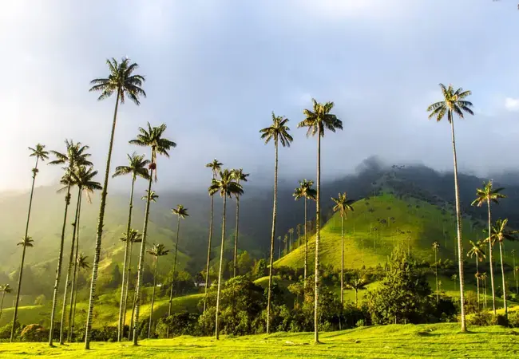

Salento · Colombia
Het Valle de Cocora is een van de meest spectaculaire en iconische landschappen van Colombia — een groene vallei gedomineerd door de slanke, imposante waspalmen (Ceroxylon quindiuense), de nationale boom van Colombia en de hoogste palmbomen ter wereld (tot 60 m hoog).
De klassieke route is een lus van 13 km door mistig junglelandschap: je begint met een afdaling in de jungle langs beken en hängbrücken, passeert een kolibrie-reservaat (een hoogtepunt!), en eindigt op de open groene weide met de torenhoge waspalmen. Een van de mooiste wandelingen van Zuid-Amerika.

Valle de Cocora In a country full of beautiful landscapes, the Valle de Cocora is one of the most striking. It stretches east of Salento into the lower reaches of PNN Los Nevados, with a broad green valley framed by sharp peaks. Everywhere you’ll see the palma de cera (wax palm), the largest palm in the world (up to 60m tall) and Colombia’s national tree. Set amid the misty green hills, they are spectacular to behold.
Valle de Cocora Salento sits atop the Valle de Cocora, which contains a thick forest of the skyscraper wax palm, Colombia’s national tree. The world’s tallest palm tree, it grows up to 60m high and lives for as long as 120 years. The valley, which offers picturesque hikes, is easily explored in a day-trip from Salento.
• BELANGRIJK: Neem bij de jeepstop NIET de hoofdweg maar ga RECHTS het veld in — dat is het begin van de jungleroute. Vraag een kaartje bij het hotel!
• Vertrek zo vroeg mogelijk: voor 8u als je kan — minder drukte en betere lichtomstandigheden
• Minimaal 1,5L water per persoon meenemen + snacks
• Goede wandelschoenen zijn essentieel — het pad is steil en bij regen heel glibberig
• De kolibrie-tuin (Acaime) is een hoogtepunt — tientallen soorten kolibries
• Wacht op de terugweg aan het startpunt van de jeeps — kan zijn dat je even wacht tot de jeep vol is